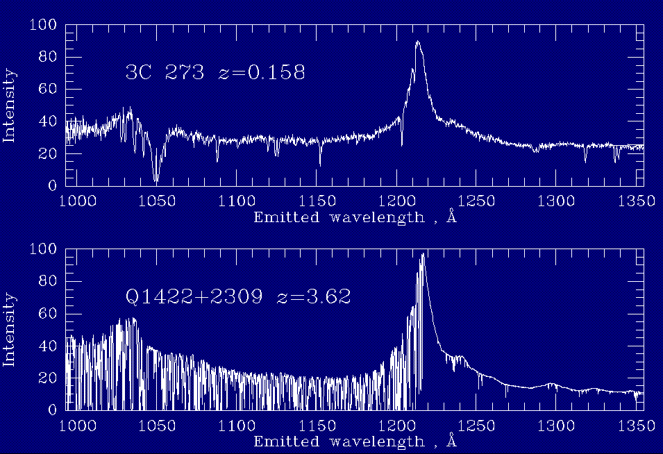
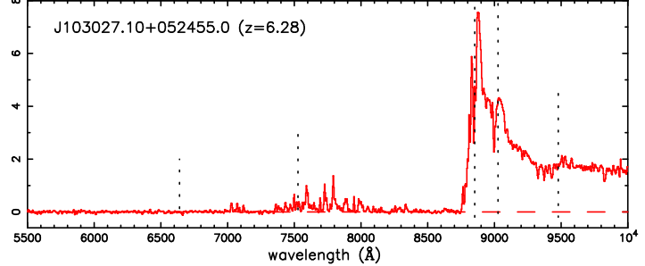
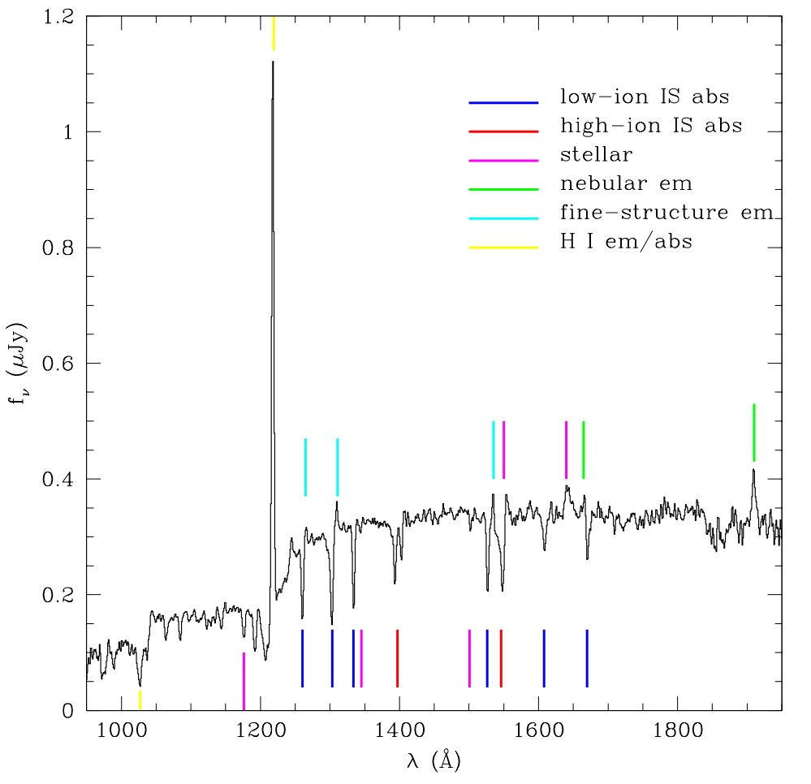
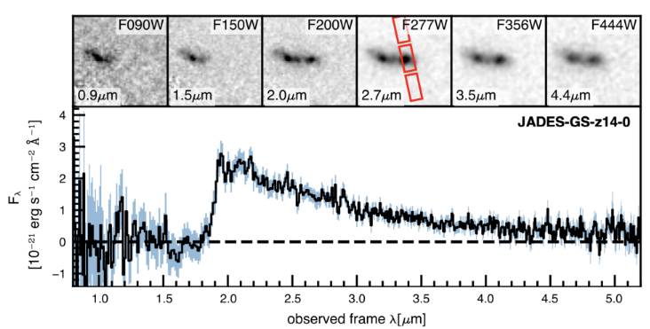

Observational cosmology is an inference problem: we never see galaxies, only light that has been stretched by cosmic expansion and chewed on by everything in between. Five things — filters, redshift, the intergalactic medium, dust, and the Lyman break — determine what actually lands on the detector. This thesis considers everything except dust, which is already built in to the SED templates used.
The dataset behind everything here is COSMOS — a patch of equatorial sky about sixteen times the area of the full Moon, deliberately chosen because it has few foreground stars and very little Milky Way dust in the way. Telescopes from Hawai'i to space have stared at it for two decades, producing the COSMOS2020 catalogue: 1.7 million objects, each measured in up to 44 colour filters.
A photometric filter is a piece of glass that only passes light within a fixed wavelength window. The detector then integrates everything that gets through into a single number (flux density). Compare that to a spectrograph, which splits light into thousands of wavelength channels: a spectrum is the full text of a galaxy's story, while photometry is the same text read through frosted glass — you can make out the shape of the paragraphs but not the individual words. The trade is brutal but worth it: a spectrograph does one object at a time; a camera does everything in the field at once. With billions of galaxies coming from Rubin-LSST and Euclid, photometry is the main method.
Colour: the difference in brightness between two filters. A sharp feature in the spectrum — a cliff-edge "break" — produces a huge colour between the filter just blueward and the filter just redward of it. Colours are one of the ways how photometry recovers the plot of the story it can't quite read.
As light crosses an expanding universe, its wavelength is stretched by the same factor space itself has stretched, the factor is (1 + z): a galaxy at redshift z = 4 emitted its light when the universe was one-fifth its current size — roughly 1.5 billion years after the Big Bang. Redshift is simultaneously a distance, a clock, and the fundamental coordinate of cosmology. Measure z for enough galaxies and you can watch the universe grow up.
Two ways to measure it. Spectroscopic redshifts read the exact observed wavelength of a known spectral line — precise but painfully slow. COSMOS2020 has spec-z for only a few thousand of its 1.7 million objects. Photometric redshifts (photo-z) instead watch spectral features move through the filter set as z increases and fit template spectra to the resulting colour pattern — typically via χ² minimisation over a redshift grid. Precision drops to σz ∼ 0.01–0.05·(1+z), but you get every galaxy in the survey. COSMOS ships photo-z from two industry-standard codes, EAZY and LePhare. This thesis both leans on (as reference redshifts) and competes against (as baselines) the LePhare redshift estimates.
Between a distant galaxy and our telescope lies gigaparsecs of not-quite-empty space, strewn with clouds of neutral hydrogen — the intergalactic medium (IGM). Any photon blueward of the Lyman-α line (rest wavelength 1216 Å) that meets one of these clouds at just the right redshift gets absorbed. A photon travelling billions of years passes clouds at every intermediate redshift, each cloud takes a bite (absorbs) at its own redshifted Lyman wavelengths, and the bites pile up into the Lyman-α forest — hundreds of absorption lines shredding the blue side of the spectrum. Below the Lyman limit (912 Å), photons are energetic enough to ionise hydrogen outright, and dense clouds erase the spectrum almost completely.
Each cloud absorbs at its own redshifted Lyman wavelengths, so the bites land at different observed wavelengths and pile up into a "forest" of absorption lines. Because the clouds are placed randomly, every galaxy's line of sight is a different draw — the fact that powers Chapter 03 (VILA).

Two quasar spectra plotted in their rest frames, one at redshift z = 0.158 (nearby) and one at z = 3.62 (distant). The tall peak in each is the Lyman-α emission line at 1216 Å. Look blueward (left) of that peak: the nearby quasar's continuum is smooth and clean, while the distant quasar's continuum is shredded into a dense thicket of narrow absorption lines — the Lyman-α forest.
Why the difference? Every line in the forest is a separate hydrogen cloud sitting somewhere along the line of sight, absorbing at the Lyman-α wavelength as seen in that cloud's rest frame. Light from a more distant source crosses more clouds, and the cloud population itself was denser in the younger universe — so the forest thickens dramatically with redshift. The implication for this thesis: the blue side of every high-redshift galaxy's photometry is systematically suppressed, by an amount that varies from sightline to sightline. Ignore it and your fluxes are wrong. One can average it but it introduces errors while dealing at the individual galaxy level.

The spectrum of quasar J103027.10+052455.0 at redshift z = 6.28. Redward of the (redshifted) Lyman-α line near 8700 Å, the spectrum looks normal. Blueward of it, the flux doesn't just get nibbled — it goes to zero, over a huge stretch of wavelength. This is the Gunn–Peterson trough.
What it means: Gunn & Peterson showed in 1965 that even a tiny fraction of neutral hydrogen produces an enormous Lyman-α optical depth — τ ∼ 10⁵ × the neutral fraction. At z > 6 we are looking back into the tail end of the "epoch of reionisation," when enough neutral hydrogen remained to absorb essentially every blueward photon. The implication: beyond z ≈ 6, the blue filters carry almost no information at all.
Astronomers sort the absorbers by their hydrogen column density NHI (how much gas a photon moves through). Lyman-α forest (LAF) clouds are thin wisps tracing the cosmic web — individually harmless, collectively a blanket. Lyman-limit systems (LLS) are thick enough to block all ionising photons, stamping a hard edge at the redshifted 912 Å. Damped Lyman-α systems (DLA) are near-galactic slabs of neutral gas: total blackout below the limit. LAF clouds are ~500× more common than DLA — but a single DLA can zero out a sightline that would otherwise be clear. That asymmetry is why the average absorption is a poor description of any individual galaxy.
The effect of this absorption can be seen in Lyman break galaxies. A young star-forming galaxy at high redshift has a bright blue continuum — but the IGM plus the galaxy's own gas erase everything blueward of the Lyman features, carving a cliff into the spectrum. Redshift slides that cliff through the filter set. Find the filter where a galaxy abruptly vanishes while staying bright in redder bands, and you've read its approximate redshift straight off the filter wheel: g-band dropouts sit at z ≈ 4, r-band dropouts at z ≈ 5. These are Lyman Break Galaxies (LBGs).

A composite (stacked) rest-frame UV spectrum built from hundreds of LBGs. The dominant feature is the towering Lyman-α emission line at 1216 Å — hydrogen atoms in the galaxy cascading back to their ground state after being excited by hot young stars. Immediately blueward of the peak, the continuum visibly steps down: that is the Lyman-α forest blanketing at work, the statistical average of thousands of intervening clouds. Various interstellar absorption lines from the galaxy's own gas punctuate the continuum redward of the line.
What it implies: LBGs are luminous, blue, actively star-forming systems whose spectra look remarkably like local starburst galaxies scaled up. The combination of a strong emission line, a blanketed blue side, and a hard break makes them simultaneously easy to find photometrically and valuable to study — their numbers and clustering constrain how structure assembled in the early universe.

JWST observations of one of the most distant galaxies ever confirmed. The image cutouts along the top show the same patch of sky through progressively bluer filters (right to left): the galaxy is clearly detected in the red bands, then abruptly disappears in F150W and F090W — it has "dropped out." The panel below shows the measured spectrum, with the sharp break confirming spectroscopically exactly what the vanishing act implied photometrically.
How to use it: the observed wavelength of the break is 1216 Å × (1 + z), so the identity of the dropout band immediately brackets the redshift — no spectrum required. The catch: other spectral cliffs exist. The Balmer/4000 Å break in old, low-redshift galaxies can impersonate a Lyman break in coarse broadband colours, letting z ≈ 0.5 impostors into a z ≈ 4 sample. In practice, selection uses cuts in a colour–colour plane (this thesis adopts the Harikane et al. 2022 criteria) designed to fence the impostors out — with imperfect success, as Chapter 06 quantifies.